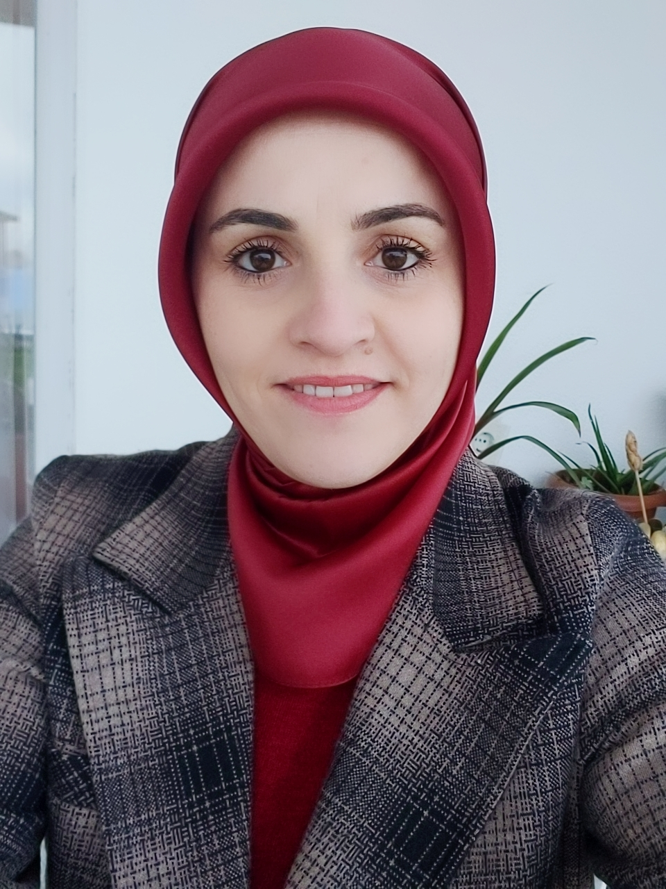
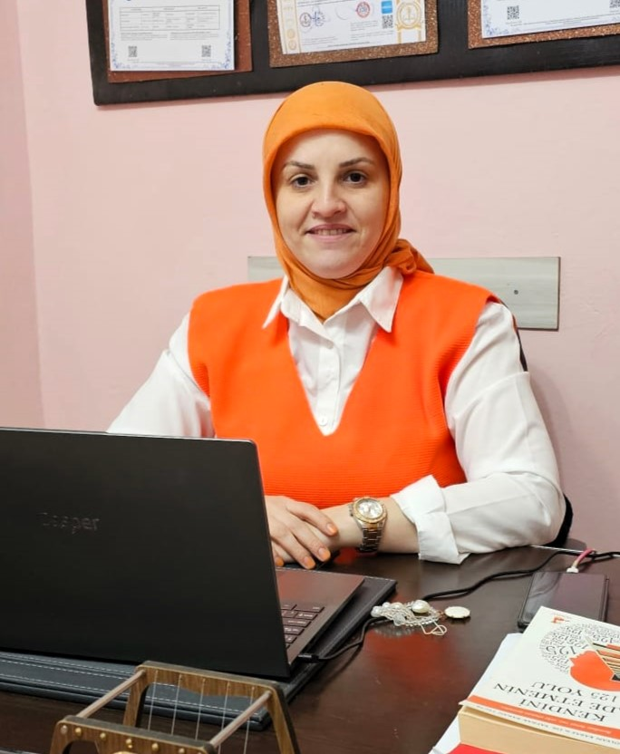

Evlilik & İlişkiler
Evlilikte Etkili İletişim ve Çatışma Çözümü
Mutlu ve sağlıklı bir evlilik için iletişim stratejileri...
İster aile danışmanlığı, ister çocuk gelişimi, ister bireysel destek olsun — hangi hizmetin size uygun olduğunu birlikte keşfetmek için ücretsiz ön görüşme imkânından yararlanabilirsiniz.
Unutmayın, değişim bir adımla başlar. Aileniz için bu adımı bugün atın.

2 dakikada hangi danışmanlık alanının size daha uygun olduğunu görün ve doğru adımı daha hızlı atın.
Uzman Aile Danışmanı olarak, 10+ yıllık profesyonel deneyimimle ailelere, çiftlere ve bireylere rehberlik ediyorum. Empaz Aile Danışmanlığı'nın kurucusu olarak, her danışanımın özel ihtiyaçlarına odaklanıyor, gizlilik ve etik ilkeler çerçevesinde çalışıyorum.
Sürekli kendini geliştiren bir profesyonel olarak, güncel yaklaşımları takip ediyor ve danışanlarıma en etkili destek yöntemlerini sunuyorum. İlişkilerde yaşanan zorlukları fırsata çevirmeyi ve kalıcı çözümler üretmeyi hedefliyorum.
10+ Yıllık Profesyonel Tecrübe
Aile, Çift ve Bireysel Danışmanlık
6+ Uluslararası Sertifika
500+ Başarılı Vaka

İlişki sorunları, iletişim eksikliği, çatışma çözümü ve boşanma süreci gibi konularda destek.
Davranış sorunları, okul başarısızlığı, kaygı ve ergenlik dönemi zorlukları üzerine çalışmalar.
Stres, kaygı, depresyon, özgüven sorunları ve kişisel gelişim hedefleri için bireysel seanslar.
Emine Çayır'ın danışmanlığı ile yaşanan dönüşümler
İstanbul - Aile Danışmanlığı
Emine hoca ile başladığımız danışmanlık süreci hayatımı ve aile ilişkilerimizi tamamen değiştirdi. İletişim sorunlarımızı çözmek için bize pratik ve gerçek çözümler sundu. Özellikle eşimle olan ilişkimiz çok iyileşti. Gerçekten çok teşekkür ederim.
Ankara - Çocuk Danışmanlığı
Oğlumun akademik başarısında ve sosyal ilişkilerinde ciddi sorunlar yaşıyorduk. Emine hoca sadece oğluma değil, bana da ailemize de rehberlik etti. Şimdi oğlum daha mutlu ve kendine güveni arttı. Çok iyi bir danışman.
Izmir - Bireysel Danışmanlık
Kişisel gelişim konusunda çok ciddi sıkıntılar yaşıyordum. Emine hoca bana özgüven kazandırırken, aynı zamanda çok pratik teknikler öğretti. Yeni halimle çok daha mutlu ve başarılı hissediyorum. Tavsiye ederim.
Bursa - Çift Terapisi
Eşimle boşanmak üzereydik. Emine hoca bize yeniden birbirimizi anlamayı öğretti. Çift terapisi sayesinde evliliğimiz tamamen iyileşti. Her çift danışmanlık almak için buna ihtiyaç duyabilir. Çok profesyonel biri.
Ankara - Stres Yönetimi
İş stresi hayatımı ele geçirmişti. Emine hoca bana danışmanlık sayesinde stres yönetimi tekniklerini öğrendim. Hayat kalitem çok yükseldi. Tüm stresli arkadaşlarıma tavsiye ediyorum.
Izmir - Ebeveyn Eğitimi
Çocuğumu nasıl yetiştireceğim konusunda çok kafam karışıktı. Emine hoca ebeveynlik konusunda beni çok eğitti. Şimdi daha rahat ve kendi ihtiyaçlarına uygun bir parent olduğumu hissediyorum. Harika bir danışman.
İstanbul - Aile Danışmanlığı
Emine hoca ile başladığımız danışmanlık süreci hayatımı ve aile ilişkilerimizi tamamen değiştirdi. İletişim sorunlarımızı çözmek için bize pratik ve gerçek çözümler sundu. Özellikle eşimle olan ilişkimiz çok iyileşti. Gerçekten çok teşekkür ederim.
Ankara - Çocuk Danışmanlığı
Oğlumun akademik başarısında ve sosyal ilişkilerinde ciddi sorunlar yaşıyorduk. Emine hoca sadece oğluma değil, bana da ailemize de rehberlik etti. Şimdi oğlum daha mutlu ve kendine güveni arttı. Çok iyi bir danışman.
Izmir - Bireysel Danışmanlık
Kişisel gelişim konusunda çok ciddi sıkıntılar yaşıyordum. Emine hoca bana özgüven kazandırırken, aynı zamanda çok pratik teknikler öğretti. Yeni halimle çok daha mutlu ve başarılı hissediyorum. Tavsiye ederim.
Bursa - Çift Terapisi
Eşimle boşanmak üzereydik. Emine hoca bize yeniden birbirimizi anlamayı öğretti. Çift terapisi sayesinde evliliğimiz tamamen iyileşti. Her çift danışmanlık almak için buna ihtiyaç duyabilir. Çok profesyonel biri.
Ankara - Stres Yönetimi
İş stresi hayatımı ele geçirmişti. Emine hoca bana danışmanlık sayesinde stres yönetimi tekniklerini öğrendim. Hayat kalitem çok yükseldi. Tüm stresli arkadaşlarıma tavsiye ediyorum.
Izmir - Ebeveyn Eğitimi
Çocuğumu nasıl yetiştireceğim konusunda çok kafam karışıktı. Emine hoca ebeveynlik konusunda beni çok eğitti. Şimdi daha rahat ve kendi ihtiyaçlarına uygun bir parent olduğumu hissediyorum. Harika bir danışman.
Ruh sağlığı ve kişisel gelişim üzerine derinlemesine yazılar
Mutlu ve sağlıklı bir evlilik için iletişim stratejileri...
Çocuk eğitiminde ceza yerine pozitif disiplin yöntemleri...
İlişkilerde ve hayatta başarı için duygusal zeka...
Kariyer ve aile hayatı arasında denge kurma teknikleri...
Ev işleri ve çocuk bakımında adil paylaşım...
Akademik başarı için motivasyon ve destek stratejileri...
Arkadaşlık ilişkileri ve sosyal uyum becerileri...
İnternet ve sosyal medyada güvenlik önlemleri...
Çocuk eğitiminde tutarlı ve etkili sınır koyma...
Ergenlik döneminde sağlıklı iletişim yöntemleri...
Boşanma sürecinde çocuklara yaklaşım ve destek...
Sağlıklı öz güven ve öz saygı inşa etme yöntemleri...
Çocuklarda okuma alışkanlığı geliştirme stratejileri...
Spor ve beslenme alışkanlıkları geliştirme...
Yaş dönemlerine göre çocuk gelişimi ve destekleme...
Web sitemizdeki randevu formunu doldurabilir, bizi direkt arayabilir veya WhatsApp üzerinden iletişime geçebilirsiniz. Size en uygun gün ve saat için randevu oluşturulacaktır.
İlk görüşme tanışma ve değerlendirme odaklıdır. Sizinle ilgili temel bilgileri alır, yaşadığınız zorlukları anlamaya çalışır ve beklentilerinizi konuşuruz. Ayrıca danışmanlık süreci hakkında detaylı bilgi veririz.
Hayır, ilk görüşme ücretsizdir. Bu görüşme, sizin ihtiyaçlarınızı anlamak ve size en uygun desteği sunmak için bir fırsattır.
Yapılan araştırmalar, online terapinin yüz yüze terapi kadar etkili olduğunu göstermektedir. Özellikle pandemi döneminde yaygınlaşan online terapi, zaman ve mekan esnekliği sağlaması açısından tercih edilmektedir.
Güvenli bir görüntülü görüşme platformu üzerinden gerçekleştirilir. Seans öncesinde size bağlantı linki gönderilir. Sessiz bir ortamda, kameralı bir cihaz ile bağlanmanız yeterlidir.
Stabil bir internet bağlantısı, kamerası ve mikrofonu olan bir bilgisayar veya tablet/telefon yeterlidir. Seansların kesintisiz ilerlemesi için sessiz bir ortam önemlidir.
Terapi süresi kişinin ihtiyaçlarına ve sorunun niteliğine göre değişir. Bazı danışanlar 6-8 seansta sonuç alırken, bazıları için 15-20 seans gerekebilir. Düzenli değerlendirmelerle süreci birlikte planlarız.
Standart bir terapi seansı 50 dakika sürer. İlk görüşme ise genellikle 60-90 dakika arasında sürebilir çünkü daha detaylı bir değerlendirme yapılır.
Genellikle haftada bir seans yapılır. Ancak ihtiyaca göre iki haftada bir veya daha sık görüşmeler de planlanabilir. Bu, danışanın durumuna ve hedeflerine göre belirlenir.
Çocuğunuzda davranış değişiklikleri, okul başarısında düşüş, sosyal ilişkilerde zorluklar, aşırı kaygı veya depresif belirtiler gözlemlediğinizde profesyonel destek almanız önerilir. Erken müdahale birçok sorunu çözmede daha etkilidir.
Ebeveynler terapi sürecinin önemli bir parçasıdır. Düzenli olarak ebeveyn görüşmeleri yapılır, çocuğun gelişimi hakkında bilgi paylaşılır ve ev ortamında uygulanacak stratejiler belirlenir. Ayrıca gerektiğinde aile terapisi de sürece dahil edilebilir.
İdeal olan çift terapisine her iki eşin de katılmasıdır. Ancak eşiniz katılmak istemiyorsa, siz bireysel danışmanlık alarak ilişkinizi iyileştirme yolunda adımlar atabilirsiniz. Bazen bir eşin değişimi, diğer eşi de terapiye katılmaya motive edebilir.
Terapi süresi çiftin ihtiyaçlarına ve sorunların karmaşıklığına göre değişir. Genellikle 8-15 seans arası sürebilir. İlerleme kaydedildikçe seanslar azaltılabilir veya gerektiğinde uzatılabilir. Her çift için özel bir plan oluşturulur.
Seans ücretleri hizmet türüne göre değişmektedir. Nakit, kredi kartı ve havale/EFT ile ödeme yapılabilir. Bazı durumlarda taksit seçenekleri de mevcuttur. Güncel ücret bilgisi için lütfen bizimle iletişime geçin.
Randevunuzu en az 24 saat öncesinden iptal edebilirsiniz. Daha geç iptal veya gelmeme durumunda seans ücreti tahsil edilir. Acil durumlarda lütfen en kısa sürede bizi bilgilendirin.